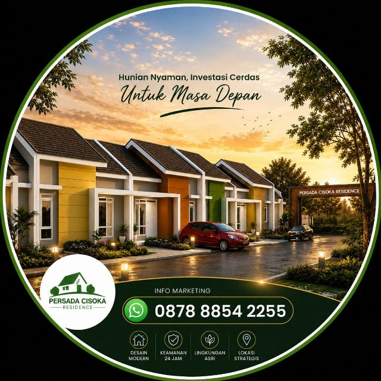

16.40
Ada price list-nya nggak kak?16.38
Ini price list-nya ya kak, aku kirim langsung di sini.16.38
Dari fotonya, itu {{contoh_analisa|tipe yang sedang kamu tanyakan}}. Aku jelaskan ya.16.40

VIRA Dashboard
{{nama_bisnis|Customer Service}}
Chat masuk
{{volume_bulanan}}/bln
Sumber teratas
{{channel_utama|WhatsApp}}
SenSelRabKam
JumSabMin
Laporan konversi, peak time, dan daily report — bisa dibuka sendiri kapan saja,
tanpa perlu menanyakan ke siapa pun.
Ilustrasi tampilan — angka pada dashboard hanya contoh.
Comparison
| Features | Basic | Premium | Add Ons |
|---|
| WhatsApp Auto-Reply | ✔ | ✔ | |
| FAQ | ✔ | ✔ | |
| Natural Language Processing | ✔ | ✔ | |
| Basic Analytics (Chat Count) | ✔ | ✔ | |
| Google Sheets Sync | ✔ | ✔ | |
| {{nama_fitur_aksi|Automated Lead Capture}} | ✔ | ✔ | |
| Automated Follow Up | ✔ | ✔ | |
| Call Redirection | ✔ | ✔ | |
| Traffic Source Recognition | ✔ | ✔ | |
| Send Media | ✘ | ✔ | |
| Analyze Photo | ✘ | ✔ | |
| Advanced Insights (Conversion %, Peak Time, Daily Report) | ✘ | ✔ | |
| Custom Persona | ✘ | ✔ | |
| Priority Support | ✘ | ✔ | |
| Monthly Persona Update | ✘ | ✔ | |
| Global Language Capability | ✘ | ✘ | Add On |
| Features |
BasicIDR 3.000.000/month |
PremiumIDR 5.000.000/month |
Add Ons |
| One-Time System Setup & Integration |
IDR 3.000.000Free |
IDR 3.000.000Free |
— |
| WhatsApp Auto-Reply | ✔ | ✔ | |
| FAQ | ✔ | ✔ | |
| Natural Language Processing | ✔ | ✔ | |
| Basic Analytics (Chat Count) | ✔ | ✔ | |
| Google Sheets Sync | ✔ | ✔ | |
| {{nama_fitur_aksi|Automated Lead Capture}} | ✔ | ✔ | |
| Automated Follow Up | ✔ | ✔ | |
| Call Redirection | ✔ | ✔ | |
| Traffic Source Recognition | ✔ | ✔ | |
| Send Media | ✘ | ✔ | |
| Analyze Photo | ✘ | ✔ | |
| Advanced Insights (Conversion %, Peak Time, Daily Report) | ✘ | ✔ | |
| Custom Persona | ✘ | ✔ | |
| Priority Support | ✘ | ✔ | |
| Monthly Persona Update | ✘ | ✔ | |
| Global Language Capability | ✘ | ✘ | IDR 999.000/month |
*Price exclude API Token Billing
Siapa saja yang
sudah pakai VIRA?
Sudah berjalan
The Scholars
Platform Edukasi
Ceritanya
Pertanyaan calon murid dan orang tua masuk lewat Instagram dan
WhatsApp, sering di luar jam kerja. Pertanyaan yang sama berulang tiap hari, dan
pendaftaran kelas dicatat manual satu per satu.
Yang dituju
Calon murid bisa tanya-jawab soal program dan langsung mendaftar
kelas lewat WhatsApp kapan pun, tanpa menunggu jam kerja admin — sementara adminnya
fokus ke hal yang benar-benar butuh penilaian manusia.
Sudah berjalan

Persada Cisoka Residence
Developer Properti
Ceritanya
Leads properti mahal. Calon pembeli sering chat tengah malam
sepulang kerja — telat dibalas berarti mereka keburu lirik developer sebelah.
Follow-up manual satu per satu gampang terlewat.
Yang dituju
VIRA membimbing calon pembeli sampai menjadwalkan survey unit.
Yang belum survey difollow-up otomatis oleh AI yang memahami isi percakapannya —
bukan template yang dikirim sama rata ke semua orang.
WHY?
Kenapa bisnis Anda harus menggunakan VIRA?
#1
Time Freedom
Buy Your Time
Setiap chat yang masuk menuntut perhatian: dibaca, dipahami, dibalas,
lalu diingat untuk ditindaklanjuti. Yang paling mahal bukan waktunya — tapi fokus yang
terpotong tiap kali notifikasi muncul.
{{volume_angka}} chat per hari × ±5 menit ≈ {{jam_harian}} jam per hari
{{jam_harian}} jam × 30 hari = {{jam_bulanan}} jam per bulan yang bisa dialihkan ke
hal yang menghasilkan closing lebih besar.
Asumsi ±5 menit per chat (baca, balas, catat). Angka chat harian
berasal dari obrolan kita.
Bisa dialihkan ke: Strategi Marketing — optimasi kanal iklan yang paling efektif · Follow-Up Leads Lama — menghidupkan lagi leads yang sempat mati · Negosiasi & Closing — fokus ke yang siap deal.
“The most precious resource we all have is time.” — Steve Jobs
#2
Zero Leaking Profit
Balas Kapan Pun, Bukan Cuma Jam Kerja
{{target_pelanggan|Calon pelanggan}} tidak selalu chat di jam kerja.
Banyak yang baru sempat menghubungi malam hari, sepulang kerja, atau saat libur — persis
ketika minatnya sedang paling tinggi.
VIRA membalas dalam hitungan menit, 24/7. Tidak ada lagi chat yang masuk tengah malam lalu
baru terbaca besok siang, saat minatnya sudah dingin.
Respons lebih cepat → {{aksi_utama|langkah berikutnya}} lebih cepat terjadi → closing lebih cepat.
Faster Response >>> More Impact.
#3
Scalability
without Complexity
Ready untuk Grow More
Kalau bisnis makin ramai, solusi biasanya menambah orang. Dengan VIRA,
volume chat naik tidak berarti biaya ikut naik.
Chat naik dari {{volume_angka}} ke {{volume_x2}} per hari — VIRA tetap
menangani, dengan biaya yang sama.
Menambah admin biasanya {{biaya_admin_frasa|berkisar Rp4–6 juta per orang per bulan}}.
#4
Brand Trust
Standar Layanan
Respons instan membuat calon pelanggan merasa lebih aman sejak pesan
pertama. Untuk keputusan yang butuh pertimbangan, kepercayaan di awal chat sering menentukan
apakah mereka lanjut serius — atau pindah ke tempat lain.
Target: Kepercayaan. Orang lebih berminat commit ke tempat yang pelayanannya seamless
dan fast response sejak awal.
Risiko Teknis & Cara VIRA Menanganinya
Risiko yang mungkin terjadi — kecil, tapi nyata
Sewaktu-waktu server AI atau jalur WhatsApp API bisa mengalami
gangguan sementara. Ini terjadi pada semua sistem digital, termasuk aplikasi besar, dan
bukan sesuatu yang bisa dijamin 100% tidak akan pernah terjadi oleh penyedia mana pun.
Bagaimana VIRA menanganinya
Sistem dilengkapi deteksi otomatis. Saat ada gangguan yang membuat
pesan gagal diproses, notifikasi langsung terkirim ke saya secara real-time. VIRA tidak
diam-diam berhenti bekerja tanpa ada yang tahu — kecuali bila gangguan terjadi pada API
WhatsApp, sehingga pesannya memang tidak pernah masuk ke sistem.
Jalur eskalasi cepat
Kalau terjadi gangguan, tim Anda bisa langsung menghubungi saya
untuk penanganan — tanpa antre tiket, tanpa perantara.
Implementation
Day 1
Menyiapkan No WhatsApp
Explore Knowledge
Membuat Database
Day 15
Set Up Workflow
Finishing Database
Integrasi ke Workflow
Day 30
Testing Workflow
Training No WhatsApp
Finalisasi No WhatsApp
Finalisasi Workflow
Finalisasi Database
Day 31
Go Live 🟢
Maintenance
{{catatan_implementasi|Timeline dimulai setelah nomor WhatsApp dan bahan pengetahuan siap.}}
100% Satisfaction
Guarantee
If you feel that VIRA has not made a significant impact on your business,
we will continue to adjust and optimize the system at no extra cost until it perfectly
fits your business needs.
Presented by :
Steven Leroy
Thank you for your time & attention
+6285155202354
chatminagent@gmail.com